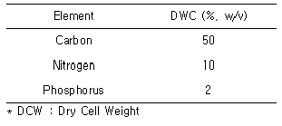
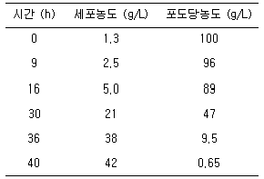
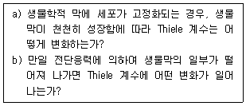
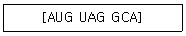
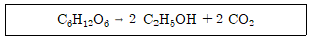
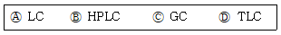

바이오화학제품제조기사 (2016-05-08 기출문제)
1과목: 미생물공학
1. 처음의 세포수가 102cell/mL, 2시간 뒤의 세포 수가 104cell/mL 이면 이 미생물의 세대시간 (doubling time)은 약 몇 분인가?
- 10
- 18
- 20
- 25
(정답률: 73%)

2. 다음 표에 나타낸 균체의 성분비를 참조하여 배지 내의 포도당(C6H12O6) 농도가 36 g/L 일 때, (NH4)2SO4의 첨가농도는 약 몇 g/L인가? (단, 포도당과 (NH4)2SO4 의 분자량은 각각 180과 132이다.)

- 13.6
- 6.8
- 2.6
- 1.4
(정답률: 71%)
3. 정상젖산발효에서는 이론적으로 1 몰의 포도당으로부터 몇 몰의 젖산이 생산되는가?
- 1 몰
- 2 몰
- 3몰
- 4 몰
(정답률: 88%)
4. 제한배지(defined medium) 성분이 아닌 것은?
- 황산 암모늄
- 인산 이수소 칼륨
- 염화 마그네슘
- 카제인 나트륨
(정답률: 84%)
5. 젖산발효에 대한 설명으로 옳지 않은 것은?
- Homo형과 hetero형이 있다.
- 산업적으로는 주로 homo형을 이용한다.
- 생성되는 젖산은 라세미(racemi)화 되어 있기도 하다.
- 젖산균은 영양 요구성이 매우 작다.
(정답률: 72%)
6. Aspergillus niger 가 생산하며 과즙의 청징에 주로 사용되는 효소는?
- α-Amylase
- Pectinase
- Naringinase
- Lipase
(정답률: 73%)
7. EMP(Embden-Meyerhof-Parnas) 대사경로를 가지고 있고 invertase를 분비하지만 amylase 기능은 결핍된 미생물이 있다. 이 균주의 배양시 탄소원으로 사용될 수 없는 기질은?
- 자당(sucrose)
- 과당(fructose)
- 포도당(glucose)
- 가용성 전분(soluble starch)
(정답률: 90%)
8. 미생물에 의해 생산되는 비타민과 인체에서의 생리활성의 연결이 옳지 않은 것은?
- Vitamin E –항산화 효과
- Vitamin B12 - 전자전달계
- Vitamin A –rhodopsin 생성
- Vitamin K –prothrombin 생성
(정답률: 68%)
9. 주로 곰팡이에 작용하는 항생물질은?
- β-lactam 계
- Aminoglycoside 계
- Macrolide 계
- Polyene 계
(정답률: 58%)
10. 영양물질인 기질의 공급 방식 중 밀폐된 발효조나 플라스크에서 산소 이외의 영양분의 추가 공급 없이 미생물을 배양하는 방법은?
- 회분 배양
- 유가 배양
- 연속 배양
- 호기적 배양
(정답률: 82%)
11. 대장균(E. coli)의 세포 성분 중 건조중량 기준으로 가장 많은 물질은?
- 지방(lipids)
- 단백질(protein)
- 핵산(nucleic acid)
- 탄수화물 (carbohydrates)
(정답률: 89%)
12. 균사에 격막(격벽)이 없는 곰팡이는?
- Monascus anka
- Mucor pusillus
- Aspergillus oryzae
- Penicillium camemberti
(정답률: 73%)
13. Aspergillus niger DNA의 [A+T]/[G+C] = 1 이라고 할 때, C와 A의 비는?
- 0.5
- 1
- 1.5
- 2
(정답률: 86%)
14. 발효의 조절작용을 분석 할 때, 복합배지의 질소원으로 가장 적합한 것은?
- Glucose
- soybean meal
- Ammonium sulfate
- Potassium phosphate
(정답률: 74%)
15. 방향족 화합물인 Anthranilic acid를 기질로 하여 Candida 속 효모에 의해서 발효 생산되는 아미노산은?
- 발린(valine)
- 메티오닌(methionine)
- 트립토판(tryptophan)
- 글루탐산(glutamic acid)
(정답률: 76%)
16. Glutamate family에서 합성되지 않는 아미노산은?
- glutamine
- arginine
- proline
- tyrosine
(정답률: 63%)
17. 화학물질에 의한 미생물의 제어 방법 중 일회용 플라스틱 배양 접시나 주사기, 봉합사 등 열에 약한 도구를 멸균하는 데 사용되는 물질은?
- 염소 가스
- 산화에틸렌 가스
- 증기 상태의 과산화수소
- 베타-프로피온 락톤 가스
(정답률: 77%)
18. 다음 중 단백질계 항생물질은?
- 카나마이신(kanamycin)
- 액티노마이신(actinomycin)
- 세파로스포린(cephalosporin)
- 스트렙토마이신(streptomycin)
(정답률: 60%)
19. 산업효소와 대표적 생산 균주의 연결이 틀린 것은?
- 알파 - 아밀라제 – 고초균(Bacillus subtilis)
- 셀룰라아제 – 대장균(E. coli)
- 미생물 레넷(rennet) - 뮤코속 진균(Mucor pusillus)
- 포도당 이성질화효소 – 방선균(Sterptomyces cinereus)
(정답률: 73%)
20. Aspergillus niger를 이용한 구연산(citric acid) 발효시에는 배지 중 구리, 철, 코발트 이온의 농도가 최적 농도 이상일 때, 구연산 생산성이 심각하게 감소한다고 알려져 있다. 이 사실을 고려할 때, 구연산의 발효조 내부 재질로 가장 적당한 것은?
- 강철(steel)
- stainless steel
- 유리가 코팅된 강철
- 청색 유리가 코팅된 강철
(정답률: 78%)
2과목: 배양공학
21. HMP 경로에 대한 설명으로 틀린 것은?
- 혐기성 대사이다.
- 3, 4, 5, 7 개의 탄소 원자를 가지는 저분자 유기화합물을 만든다.
- HMP 경로에서 생성된 erythrose-4-phosphate 는 트립토판, 페닐알라닌, 타이로신의 주요 전구체이다.
- HMP경로로부터 생성된 ribose-5-phosphate는 히스티딘 합성의 주요 전구체이다.
(정답률: 75%)
22. 해당과정에 대한 설명 중 틀린 것은?
- 해당과정은 주로 포도당이 분해되어 산화되는 초기 단계의 대사경로이다.
- 해당과정은 효모의 경우 주로 세포질에서 일어난다.
- 해당과정에서 대부분의 ATP와 NADH가 생성된다.
- 해당과정에서 발생하는 중간대사산물은 아미노산 및 핵산의 생합성 등의 전구체로 사용된다.
(정답률: 79%)
23. 유전자 재조합 균주의 배양에서 생산성에 영향을 미치는 인자 중 서로 관계있는 것끼리 묶은 것 중 틀린 것은?
- gene dosage –gene stability
- promoter –transcription efficiency
- mRNA stability –mRNA structure
- translation efficiency –protein secretion
(정답률: 68%)
24. 10리터 규모의 생물반응기에서 유가식 배양(feed batch culture)를 한다. 유가식 배양을 시작할 때의 배양액은 2리터이고 유입 유량은 시간당 0.02리터이다. 희속속도(dilution rate)는?
- 0.002 L hr-1
- 0.01 L hr-1
- 2 hr-1
- 일정하지 않고 시간에 따라 변한다.
(정답률: 65%)
25. 어떤 미생물에 대한 실험의 결과 다음 식에 따라 포도당에 존재하는 탄소의 2/3를 biomass로 전환한다는 것이 밝혀졌다. 
수율계수 YX/S는?
- 0.341 g dw cells / g substrate
- 0.461 g dw cells / g substrate
- 0.526 g dw cells / g substrate
- 0.612 g dw cells / g substrate
(정답률: 62%)
26. 기질 제한 성장의 경우, 세포성장에 대한 설명으로 틀린 것은?
- 비증식속도 μ = μm·S / Ks+S 이다.
- Ks는 μ = μmax/2 일 때의 [S] 값이다.
- 기질제한 성장은 효소 반응과 비슷하며 Monod 식으로 타나낼 수 있다.
- 비증식속도는 Pasteur 식으로 설명할 수 있다.
(정답률: 73%)
27. 배양하려는 미생물에 대한 정확한 생육인자(growth factor)를 모르거나 다양한 생육인자를 요구하는 경우에 배지에 첨가하는 성분으로 적합한 것은?
- 포도당(glucose)
- 비타민(vitamin)
- 아미노산(amino acids)
- 효모엑기스(yeast extract)
(정답률: 76%)
28. 산업적으로 많이 이용되는 농·축산물 유래 유기질소원으로 가장 거리가 먼 것은?
- Corn-steep liquor
- Cotton seed meal
- Peptone
- distillers solubles
(정답률: 66%)
29. 유전자 재조합 미생물의 배양에서 높은 플라스미드 안정성을 얻기 위해 취할 수 있는 방법이 아닌 것은?
- 고체 배지를 사용한다.
- 2단 연속 배양법을 사용한다.
- 온도 의존성 플라스미드를 사용한다.
- 항생제 의존성 플라스미드를 사용한다.
(정답률: 63%)
30. 재조합 단백질의 상업적 생산에 현재 이용되고 있는 미생물 중 효모가 대장균에 비해 갖는 장점이라 볼 수 없는 것은?
- 일부 효모의 경우, 내독소(endotoxin) 제거 공정이 불필요
- 단백질을 불용성으로 분비 생산하여 정제 공정의 단순화 및 수율 향상이 가능
- 아미노 말단 메티오닌(methionine) 잔기의 처리가 가능
- 번역후수정이 필요한 단백질 생산에 이용가능
(정답률: 63%)
31. Zymomonas는 포도당 1 몰당 1 몰의 ATP를 생산하면서 에탄올을 만들 수 있다. 이 때 사용되는 경로는?
- EMP 경로
- HMP 경로
- Calvin 회로
- Entner-doudoroff 경로
(정답률: 81%)
32. 효모를 포도당을 사용하여 회분식으로 키워 다음과 같은 데이터를 얻었다. 최대비생장속도 (μ)의 근사치 값은?

- μ = 0.1 hr-1
- μ = 0.3 hr-1
- μ = 0.5 hr-1
- μ = 1.0 hr-1
(정답률: 48%)
33. 페니실린 발효에서 생산성에 영향을 미치는 미량원소는?
- Fe, Zn, Cu
- Ca, Ni, Al
- Co, Mo, Mn
- Na, Cl, Se
(정답률: 84%)
34. 미생물의 주요 영양소에 대한 설명 중 틀린 것은?
- 포도당은 세포를 구성하는 물질을 만드는 탄소원으로써 사용될 수 있다.
- 포도당은 산화되거나 발효되어 에너지를 만들어 내는 데 사용될 수 있다.
- 암모니아는 질소원으로써 아미노산이나 핵산의 생합성에 사용된다.
- 암모니아는 세포내에서 질산으로 산화된 후 질소원으로 사용된다.
(정답률: 80%)
35. 미생물 배양 시, 배지 내에 여러 가지 에너지원이 동시에 존재하여, 하나의 에너지원이 생산한 이화생성물이 다른 에너지원을 이용하기 위해 필요한 효소를 억제(cadabolite repression)하여 세포 성장이 다단계로 일어나는 성장 형태를 무엇 이라고 하는가?
- diauxic growth
- dual time growth
- autotrophic growth
- auxotrophic grwoth
(정답률: 76%)
36. 동물세포 배양을 위한 생물반응기 설계와 관련 된 동물세포의 특성에 대한 설명으로 옳은 것은?
- CO2를 보강한 공기를 사용하는 것은 동물세포가 대사에를 CO2를 필수적으로 요구하기 때문이다.
- 동물세포의 산소요구량이 세균보다는 낮고, 식물 세포보다는 높으므로 이에 맞는 통기를 해야한다.
- 전단응역에 매우 약하여 교반속도도 매우 느리고, 공기 방울 이동속도도 매우 낮아야 한다.
- 세포의 부착 의존성을 위해서 미세담체에 동물세포를 화학결합으로 고정화하는 방법이 사용된다.
(정답률: 57%)
37. 미생물 포자에 대한 설명으로 옳은 것은?
- 포자는 이분법에 의하여 분열한다.
- 포자는 원핵생물이 주로 생성한다.
- 방선균류는 대부분 포자를 형성한다.
- 모든 그람 양성균은 포자를 형성한다.
(정답률: 70%)
38. 포도당 분자가 α-1,4 결합만으로 연결된 직선 사슬 구조를 갖는 물질은?
- 아밀로펙틴
- 아밀로오스
- 셀룰로오스
- 글리코겐
(정답률: 72%)
39. 미생물 증식 측정법으로 부적합한 방법은?
- 성장세대 측정법
- 건조균체중량 측정법
- 분광광도계를 이용한 탁도 측정법
- 생체중량(fresh cell weight) 측정법
(정답률: 68%)
40. 유도 프로모터를 이용한 재조합 균주 배양에 가장 적합한 배양공정은?
- 회분식 배양
- 고정화 배양
- 2단계 연속배양
- 재순환식 연속배양
(정답률: 60%)
3과목: 생물반응공학
41. 일반적으로 반응기 용량이 500m3을 초과하는 경우, 다음 중 대규모화(scale-up)하기에 가장 부적합한 반응기 형태는?
- 막형(membrane type)
- 유동층(fluidized-bed type)
- 교반형(stirred vessel type)
- 기포탑(bubble column type)
(정답률: 72%)
42. 연속식 생물반응기의 특성에 대한 설명 중 틀린 것은?
- 2차 대사산물의 생산에 적합하다.
- 단세포 단백질 생산에 사용될 수 있다.
- 정상 상태에서 반응이 이루어질 수 있다.
- 한 생성물만을 위한 공정 체계에 기초를 둔다.
(정답률: 66%)
43. 반응기 내에서의 미생물 배양 시, 발생되는 거품에 대한 설명으로 옳은 것은?
- 거품 발생은 미생물이 배지 성분을 더 빠르게 섭취할 수 있도록 도와주는 등 도움이 되지만, 반응기 내를 다 채울 만큼 많이 발생하면 좋지 않다.
- 거품 제거제(anti-foam agent)는 배양액(broth)의 계면 장력을 증가시켜 쉽게 거품을 제거한다.
- 거품에 의해 가스 필터를 적실 수 있으므로 거품을 제거하면 타 미생물의 오염을 방지할 수 있다.
- 거품 제거제는 비싸지만, 거품 발생 시 많은 양을 투입하여 거품을 일시에 제거할 수 있는 장점을 가진다.
(정답률: 75%)
44. 교반 반응기와 비교할 때, 공기부상식(air-lift) 반응기의 장점이 아닌 것은?
- 구조가 간단하다.
- 에너지 요구량이 적다.
- 물질 전달 속도를 높일 수 있다.
- 생성물과 미생물의 분리가 용이하다.
(정답률: 52%)
45. 회분식 배양기와 연속식 배양기를 비교할 때, 연속식 배양기가 더 유리한 점은?
- 장치 비용이 싸다.
- 생산량이 증가한다.
- 오염의 가능성이 낮다.
- 다양한 생성물을 얻을 수 있다.
(정답률: 74%)
46. 다음 a)와 b)의 물음에 알맞은 답으로 짝지어진 것은?

- a) 점차적으로 감소, b) 갑자기 증가
- a) 점차적으로 증가, b) 갑자기 감소
- a) 점차적으로 증가, b) 변화 없음
- a) 변화 없음, b) 갑자기 감소
(정답률: 79%)
47. 생물반응기내의 물질전달에 있어 가장 중요한 요소는?
- 세포 고정화
- 교반
- 반응기내의 온도
- 반응기내의 pH
(정답률: 70%)
48. 공기멸균을 위해 유리섬유 여과기를 사용할 경우, 공기 중의 입자들이 포집되는 메카니즘의 중요한 3가지 과정이 아닌 것은?
- 충돌
- 간섭
- 접촉
- 확산
(정답률: 60%)
49. 효소를 고정화하는 방법 중 효소와 담체 사이에 작용하는 물리·화학적 힘을 이용하지 않는 방법은?
- 가교법(cross-linking method)
- 담체결합법(attachment method)
- 공유결합법(covalent bonding method)
- 미세캡슐화법(microencapsulation method)
(정답률: 71%)
50. 고정화된 효소는 전단력(shear force)에 의해 활성을 잃는 경우가 있다. 이 때, 이를 극복하기 위한 반응기 형태로서 가장 적합한 것은?
- 공기부양식(air-lift type)
- 충전층(packed-bed type)
- 유동층(fluidized-bed type)
- 교반형(stirred vessel type)
(정답률: 50%)
51. 효소를 고정화시키는 방법에 관한 설명이 아닌 것은?
- 담체 기공과는 무관하다.
- 다공성 물질 속에 넣는다.
- 고체 표면의 담체에 흡착시킨다.
- 반투막의 캡슐이나 막 사이에 캡슐화 시킨다.
(정답률: 64%)
52. 5,000 cal/mole 의 활성화 에너지를 가지는 효소의 적정 온도는 섭씨 15도에서 35도 범위라고 한다. 효소의 반응온도를 20도에서 30도로 높여서 반응시키면 반응속도는 약 몇 배 증가 하겠는가? (단, 가스 상수[gas constant]의 값은 1.987 cal/mole/K 이다.)
- 1.33
- 1.89
- 2.30
- 3.44
(정답률: 38%)
53. 효소의 불활성화(deactivation) 요인 중 비가역적인 변화가 가장 일어나기 쉬운 것은?
- 산, 알칼리
- 염, 중금속
- 계면 활성제
- 온도, 효소에 의한 펩타이드 가수분해
(정답률: 71%)
54. 효소반응에서 효소를 두고 기질과 저해제가 서로 경쟁적으로 저해하는 경우의 설명으로 맞는 것은?
- 저해제의 농도가 높아져도 겉보기 최고반응속도 Vm의 값은 변하지 않는다.
- 저해제의 농도가 높아지면 겉보기 최고반응속도 Vm의 값이 감소한다.
- 저해제의 농도가 높아지면 겉보기 Michaelis 상수 Km의 값이 감소한다.
- 저해제의 농도가 높아져도 겉보기 Km의 값은 변하지 않는다.
(정답률: 61%)
55. Michaelis-Menten 효소반응식에서, 반응물질의 농도가 Michaelis-Menten 상수(Km)와 같을 때 반응속도는 최대반응속도(Vmax)의 몇 % 인가?
- 100
- 50
- 20
- 10
(정답률: 80%)
56. 기질의 전처리공정 없이 수용성 환경에서 고정화하여 사용하기에 부적합한 효소는?
- Protease
- Isomerase
- Cellulase
- Lipase
(정답률: 57%)
57. 반응기를 대규모화시 교반탱크 반응기에서 임펠러 회전 속도와 임펠러 지름의 설계에 있어서 가장 관련이 없는 것은?
- 동력 공급량
- Michaelis-Menten 상수
- 임펠러 끝에서의 전단응력
- 레이놀드수(Reynolds Number)
(정답률: 73%)
58. 교반탱크 배양기의 장점이 아닌 것은?
- 낮은 열전달
- 유통성 및 적응성
- 혼합강도의 넓은 범위
- 높은 점도의 배지를 다루기가 용이
(정답률: 74%)
59. 어떤 효소의 촉매반응 실험이 1분 동안 섭씨 30도에서 진행되었다. 분석결과 효소촉매 반응 속도(r)식이 r =K·S 로 밝혀졌다면, 이때 반응상수의 값은 약 얼마인가? (단, 초기 및 나중 기질의 농도가 각각 10 μg/mL 이며, κ는 반응상수, S는 기질농도이다.)
- 0.1 min-1
- 0.46 min-1
- 0.9 min-1
- 2.3 min-1
(정답률: 26%)
60. 연속반응기에서 세포성장이 Monod 속도론을 따를 경우, 정상상태에서의 기질의 농도는? (단, 포화상수는 0.5 g/L, 세포의 비성장속도는 0.2h-1, 세포의 최대 비성장속도는 0.7 h-1, 초기 기질 농도는 5 g/L 이며, 원료배지는 무균상태이며, 내인성 대사 또는 사멸 속도는 생장속도에 비해 무시할 수 있다.)
- 0.2 g/L
- 0.5 g/L
- 0.7 g/L
- 1 g/L
(정답률: 38%)
4과목: 생물분리공학
61. 효모 Saccharomyces cerevisiae 당단백질의 주요 당쇄 성분은?
- 포도당(glucose)
- 만노스(mannose)
- 수크로스(sucrose)
- 시알산(sialic acid)
(정답률: 75%)
62. 과포화 용액을 얻는 방법으로 옳기 않은 것은?
- 용질의 용해도가 온도에 따라서 급격히 증가하는 경우 용액을 냉각한다.
- 용해도가 온도와 거의 무관할 때는 용매를 증발시킨다.
- 용해도가 아주 클 경우 제3의 성분을 첨가한다.
- 용해도가 온도에 따라 변화가 없을 경우는 용액을 냉각한다.
(정답률: 75%)
63. Gt (원심력×시간)를 평가할 수 있는 장치는?
- Geissler tube
- Geiger counter
- Gyro tester
- Gauss meter
(정답률: 68%)
64. 단백질과 효소의 관계를 서술한 것 중 옳은 것은?
- 단백질은 모두 효소이다.
- 효소는 단백질의 일종이다.
- 단백질과 효소의 기능은 동일하다.
- 단백질과 효소는 전혀 다른 물질이다.
(정답률: 89%)
65. 두 성분의 증발 특성이 유사하여 같이 증발되는 경우 보통의 증류만으로 두 성분을 순수하게 분리시킬 수 없다. 이 때 첨가하는 물질이 한 성분과 친화력이 크고 휘발성이어서 원료 중의 한 성분과 혼합물을 만들어 고비점 성분을 분리시키고 다시 이 새로운 혼합물을 분리시키는 조작을 무엇이라 하는가?
- 추출증류
- 공비증류
- 반응증류
- 평형증류
(정답률: 69%)
66. B+가 결합되어 있는 양이온교환수지 2 g에 A+ 형태의 용질이 100 mM 들어있는 용액 100mL을 가하였다. 이온교환 평형이 이루어진 후 용액 중의 A+의 잔류농도는 40 mM이었다. 이온교환수지 단위질량당 이온교환용량이 5 meq/g 이라고 할 때, 용질 B+의 이온교환 평형상수는? (단, 평형상수 값은 A+와 비교하였을 때 이온교환수 지의 B+에 대한 상대적인 선택도[selectivity] αB/A의미한다.)
- 0.44
- 0.67
- 1.0
- 1.5
(정답률: 50%)
67. 세포의 지질 구조에 침투하여 세포막의 투과성을 높여(permeabilization) 세포를 파쇄하는 기능을 갖는 시약은?
- 에탄올
- 메탄올
- 톨루엔
- 염화칼슘
(정답률: 76%)
68. 불용성 물질인 세포를 발효액으로부터 분리하는 기술이 아닌 것은?
- 가압 여과기
- 관형 원신분리기
- 원판형 원심 분리기
- 추출 공정
(정답률: 70%)
69. 회수 정제 공정 설계에 영향을 주는 인자로서 가장 거리가 먼 것은?
- 회수 정제 비용
- 회수 정제의 난이도 및 수율
- 최종 제품의 가격
- 최종 제품의 순도
(정답률: 85%)
70. 여과대상액내 고체물질의 물성 중 멤브레인 여과 flux의 감소에 영향을 미치는 주요인자로 가장 거리가 먼 것은?
- 고체물질의 농도
- 고체물질의 모양
- 고체물질의 크기
- 고체물질의 밀도
(정답률: 52%)
71. 등전초점화(isoelectric focusing)와 관계없는 내용은?
- 전기장
- 단백질 분리
- pH 경사(gradient)
- 속도 지배적(rate controlled) 분리
(정답률: 73%)
72. 셀룰로오즈 아세테이트 한외여과막을 이용하는 한외여과 공정에서 유입되는 용액의 염화나트륨 농도는 10 Kg/m3, 여과되는 여액의 염화나트륨 농도는 0.58 Kg/m3 이었다. 이 때 염화나트륨에 대한 한외여과막의 배제계수는?
- 0.942
- 0.958
- 0.962
- 0.973
(정답률: 61%)
73. 크로마토그패리에서 피크 체류시간(retention time)을 줄이기 위해서는 어떻게 해야 하는가?
- 유속을 줄인다.
- 컬럼 길이를 증가시킨다.
- 고정상(stationary phase)의 체적(volume)을 증가 시킨다.
- 분배계수(distribution coefficient)를 작게한다.
(정답률: 77%)
74. 가용성 생성물의 액체-액체 추출에 의한 회수정제 공정에서 액체 추출제가 갖추어야 할 특성이 아닌 것은?
- 독성이 없어야 한다.
- 비등점은 높고, 비중은 작아야 한다.
- 회수할 목적 산물에 대한 선택성이 높아야 한다.
- 목적 산물에 대한 분배계수가 높아야 한다.
(정답률: 69%)
75. Lysozyme을 이용한 세포파쇄에 대한 설명으로 옳지 않은 것은?
- 배양할 때 페니실린을 소량 첨가하면 lysozyme에 의한 세포파쇄가 용이해 진다.
- 그람음성 박테리아가 그람양성 박테리아보다 용이하게 파쇄 된다.
- Lysozyme은 세포벽 내부의 β-1,4-glycosidic 결합의 가수분해반응을 촉진시키는 역할을 한다.
- 효모를 파쇄 할 경우 lysozyme 단독으로 하기보다는 다른 분해효소와의 혼합효소 시스템을 종종 이용한다.
(정답률: 66%)
76. 미생물 세포내 효소인 nuclease 의 정제공정 순서가 옳게 나열된 것은?
- 세포파쇄 → 상등액 → 원심분리 → 흡착 → 투석 → 용출 → 농축 → Gel 여과 → 희석 → 동결건조
- 세포파쇄 → 상등액 → 희석 → 흡착 → 투석 → 용출 → Gel 여과 → 농축 → 원심분리 → 동결건조
- 세포파쇄 → 상등액 → 원심분리 → 흡착 → 용출 → 투석 → Gel 여과 → 농축 → 희석 → 동결건조
- 세포파쇄 → 상등액 → 희석 → 흡착 → 용출 → 투석 → 농축 → 원심분리 → Gel 여과 → 동결건조
(정답률: 54%)
77. 흡착제와 흡착질을 포함한 유체상이 흡착 평형상태에 도달하게 되면 두 상에 분포된 흡착질의 농도는 특정한 관계식으로 표시되고 등온 상태에서 이를 흡착 등온선이라 한다. 다음 중 흡착 등온선이 아닌 것은?
- Raoult 흡착등온식
- Langmuir 흡착등온식
- BET 흡착등온식
- Freundlich 흡착등온식
(정답률: 50%)
78. 항생제 회수에 사용되는 양이온 교환 수지가 지니고 있는 작용기(functional group)는?
- H+
- Na+
- NH3+
- SO3-
(정답률: 78%)
79. 효모나 대장균에 존재하는 효소를 분리정제 할 때, 가장 널리 이용하는 용액의 pH는?
- 1~3
- 3~5
- 6~8
- 9~11
(정답률: 86%)
80. H+가 결합되어 있는 양이온교환수지에 용질 A+가 10 mM 들어있는 용액을 접촉시켰다. 이온교환 평형 이루어졌을 때 용액 중 A+의 잔류 농도는 2 mM이었다. 이온교환수지의 용량이 5meq/g이고 H+와 비교했을 때 A+의 상대적인 이온교환 선택도 αB/A가 3일 때 평형상태에서 수지 단위 질량당 이온교환 결합된 A의 농도 [meq/g]를 구하면 얼마인가?
- 1.6
- 2.14
- 2.73
- 4.0
(정답률: 38%)
5과목: 생물공학개론
81. 단백질 합성기능을 수행하는 세포내 소기관은?
- 리소좀
- 리보솜
- 미토콘드리아
- 엽록체
(정답률: 84%)
82. 조효소액에서 글루코아밀레이스의 양을 측정하기 위해 7 mg의 단백질을 포함한 조효소 1mL를 4.44% 전분용액 9 mL에 첨가하였다. 글루코아밀레이스의 1 unit은 pH 4.5와 60℃에서 4%의 Lintner 전분용액을 이용하여 분당 1 μmol의 포도당을 생산하는 효소의 양으로 정의될 때, 초기속도실험에서 0.7 μmol 포도당 /mL·min으로 반응이 일어났다면 이 조효소의 비효소역가는 얼마인가?
- 0.5 units/mg protein
- 0.75 units/mg protein
- 1 units/mg protein
- 1.25 units/mg protein
(정답률: 48%)
83. 유전공학에서 일반적으로 사용되는 프로모터 종류에 해당되지 않는 것은?
- Constitutive
- Inducible
- Tissue-specific
- Disruptive
(정답률: 76%)
84. 유전자 조작된 세포를 이용하여 생물학적 의약품인 단백질을 만들었을 때 제품의 품질과 관련성이 없는 것은?
- 제품 수율
- 제품 순도
- 번역 후 수식 상태
- 숙주 세포
(정답률: 40%)
85. KGMP의 적용 범위가 아닌 것은?
- 원료 의약품
- 방사선 의약품
- 세포배양 의약품
- 유전자재조합 의약품
(정답률: 69%)
86. 단백질 구조가 변형되지 않은 자연 상태의 항체(IgG)는 일반적으로 항원과 결합하는 부위를 몇 개 가지고 있는가?
- 1
- 2
- 3
- 4
(정답률: 77%)
87. 공정 밸리데이션은 의약품의 제조와 관련한 밸리데이션이 언제 수행되는지에 따라 구분할 수 있다. 다음 중 공정 밸리데이션과 관련이 없는 것은?
- 분석적 밸리데이션(analytical validation)
- 동시적 밸리데이션(concurrent validation)
- 예측적 밸리데이션(prospective validation)
- 회고적 밸리데이션(retrospective validation)
(정답률: 65%)
88. 다음 보기에 제시된 전령 RNA(mRNA)에 맞는 DNA 염기 서열은?(오류 신고가 접수된 문제입니다. 반드시 정답과 해설을 확인하시기 바랍니다.)

- AUG UAC GGA
- UAC AUC GGU
- CAT ACT TTC
- TAC ATG CCT
(정답률: 78%)
89. pH가 글라이신(glycine)의 pI보다 높을 때, 글라이신의 전하(charge)는?
- -
- +
- 0
- -, +, 0 모두 갖는다.
(정답률: 79%)
90. 전통적 의미의 발효(fermentation)에 대한 설명으로 틀린 것은?
- 전자전달계를 통해 이루어진다.
- 무산소 상태의 대사과정(anaerobic metabolism)이다.
- 유산소 호흡(aerobic respiration)을 통해 이루어 진다.
- 유산(lactic acid) 등 유기산의 생성이 pyruvate를 거친 단계적 반응으로 이루어진다.
(정답률: 56%)
91. 재조합 대장균을 현미경을 통해 관찰하려고 한다. 몇 배로 확대하여 보는 것이 가장 적당한가?
- ×1
- ×10
- ×100
- ×1,000
(정답률: 77%)
92. 유전자 재조합을 위한 유전자 전달의 매커니즘이 아닌 것은?
- 발현(Expression)
- 접합(Conjugation)
- 형질도입(Transduction)
- 형질전환(Transformation)
(정답률: 77%)
93. 세린(serine)의 등전점은 얼마인가? (단, pKa1 = 2.2, pKa2 = 9.15)
- 5.68
- 6.78
- 6.95
- 11.35
(정답률: 82%)
94. 외래 DNA를 잘라서 자신을 보호하기도 하고, 유전자 조작 시 DNA를 정확하게 잘라주는 역할을 하는 효소는?
- DNA 중합효소
- 역전사효소
- DNA 연결효소
- 제한효소
(정답률: 87%)
95. 진핵세포의 핵(nucleus)에 대한 설명으로 틀린 것은?
- 핵은 핵막으로 둘러싸여 있다.
- 핵막은 평형하면서 막힌 두 쌍의 막으로 구성되어 있다.
- 핵인은 리보솜이 생성되는 것으로, 다르게 염색되는 핵 안에 있다.
- DNA 분자인 염색체를 핵 물질로 가지고 있다.
(정답률: 73%)
96. GMP의 4대 지료에 해당하지 않는 것은?
- 의약품 특성의 유지
- 의약품 품질의 보장
- 지속적인 신약 개발
- 소비자의 신뢰성 확보
(정답률: 84%)
97. 재조합 대장균에서 단백질 생산을 위한 벡터 선정시 고려해야 할 사항이 아닌 것은?
- 프로모터
- 번역 후 수정
- 단백질 분해효소
- 플라스미드 복제수
(정답률: 51%)
98. 전체 반응이 다음과 같은 S. cerevisiae 의한 에탄올 발효에 있어서 포도당이 에탄올로 완전히 전환되는 경우, 에탄올의 최대수율은 얼마인가?

- 0.49
- 0.5
- 0.51
- 0.52
(정답률: 56%)
99. 다음 보기의 크로마토그래피 중 이동상이 액체인 것을 모두 나타낸 것은?

- Ⓐ
- ⒶⒷ
- ⒶⒷⒹ
- ⒶⒷⒸⒹ
(정답률: 82%)
100. 변성된 DNA로부터 재원형화(renaturation)시키는 방법으로 가장 거리가 먼 것은?
- DNA 수용액의 온도를 낮춘다.
- DNA의 수용액에 친수성 유기용매를 첨가한다.
- DNA 수용액의 pH를 중성으로 맞춘다.
- DNA 수용액에 첨가된 변성제를 묽혀준다.
(정답률: 63%)